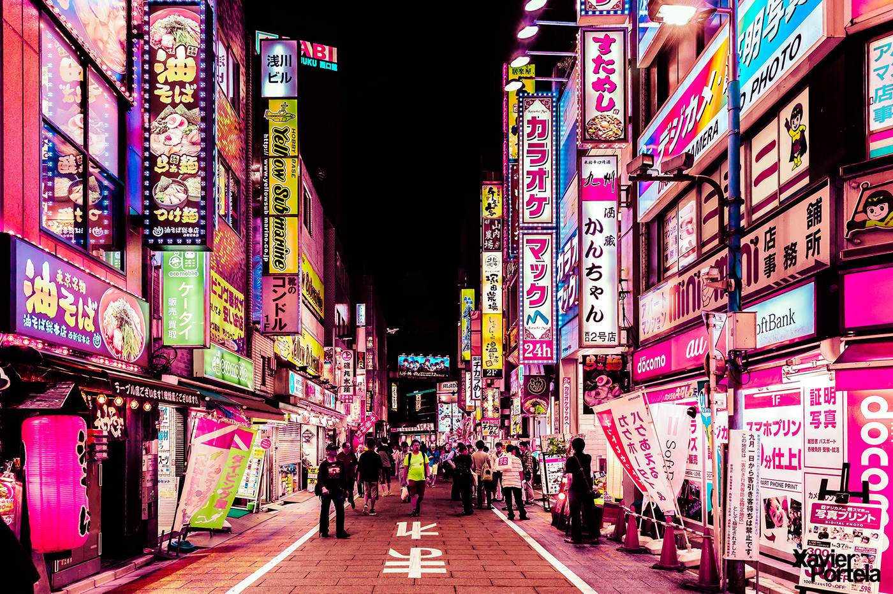

Город "восходящего солнца - Токио"

Токио – столица Японии, расположенная в восточной части страны. Это шумный мегаполис, в котором уникальным образом сочетаются современность и традиции. Токио известен своими освещенными неоном улицами, возвышающимися небоскребами, яркой модной сценой, вкусной едой и богатой культурой. С населением более 14 миллионов человек Токио является одним из крупнейших городов мира и центром инноваций, технологий и развлечений.